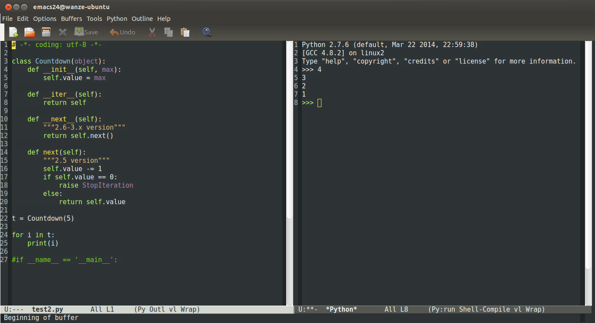
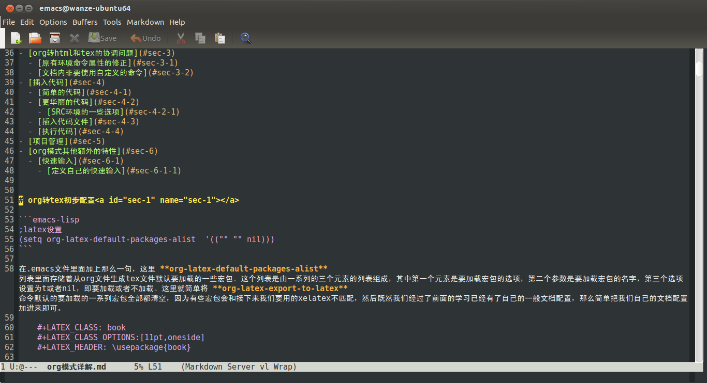
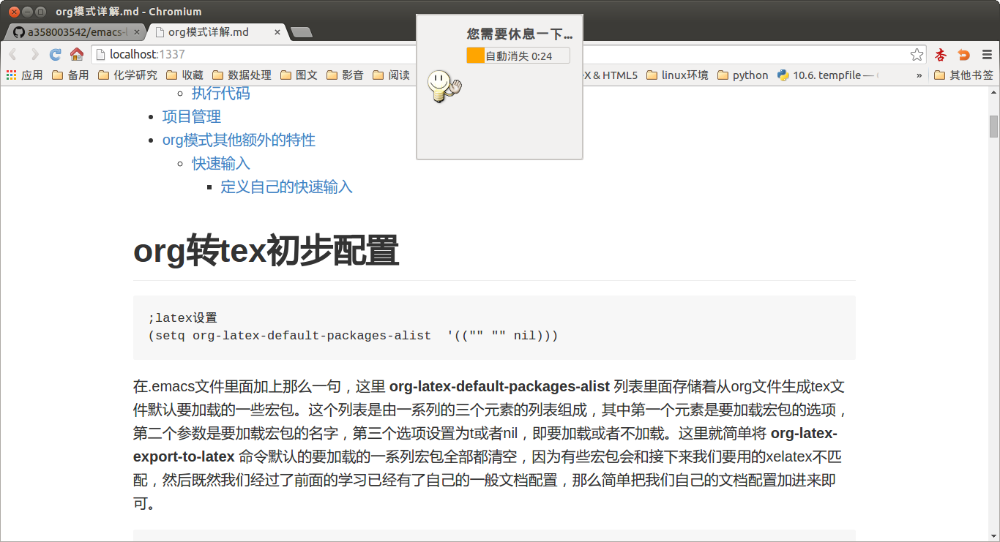

emacs入门
其实在你打开emacs开始输入文本的那一刻起，你就已经入门了。emacs说到底只是一个功能特别强大的文本编辑器，它主要的角色还是文本编辑器，一切都是围绕这个来展开的。
最基本的快捷键操作
快捷键用的最多的是C和M这两个字母，其中C是Control键，而M一般是Alt键吧。然后 C-w 表示同时按下Control键和w字母。然后 C-x C-c 中间有个空格，表示先按Ctrl+字母x，再停顿一下，然后再按Ctrl+字母c——这是退出emacs的命令。
S表示Shift键，小写s表示Super键这个了解下，然后 C-x 0 表示关闭当前窗口， C-x 1 表示只留当前一个窗口， C-x 2 表示下面新开一个窗口， C-x 3 表示右边新开一个窗口， M+x 执行emacs lisp的内部命令， C-g 取消你在minibuff中一般的输入，这些都是很基本的了，读者请记住。
查找和替换
查找和替换操作经常用到，所以快捷键最好也记住。向后查找的按键是 C-s ，你看快捷键这么简短，就说明这是一个很重要的快捷键。然后向前查找是 C-r 。继续向前或向后查找就是继续按 C-s 和 C-r 。
替换操作的按键是 M-% ,先要输入匹配的字符串，然后输入要替换成为什么，然后接下来 按键 y 表示替换，按键 n 表示不替换，按键 ! 表示全部替换。
lisp语法简介
在进入接下来的讨论之前，先简单介绍下lisp的语法，这里不是要让读者学会lisp语言了，而是为了让你对接下来要接触的最基本的emacs lisp语法不会感到恐惧。
以下例子读者如果有兴趣可以进入elisp的交互环境试验一下，具体按键是：
M-x ielm
lisp语言的一大特色就是里面的程序和数据都是列表，如
'(1, 2, 3)
这样的形式。
这个引号很关键，因为你输入给lisp的字符串都会被eval一次，然后前面加个引号，那么里面的东西eval一次之后就成(1, 2, 3)这样的形式了（即去掉引号），也就是列表数据了。
那么下面这个是什么呢？
x 'x
上面的x如果被送入eval的话，将会发生寻址操作，也就是成变量了；而第二个x加上引号，eval之后，去掉引号，就是x这样的形式了，我们可以把这个x看作字符串，当然如果我们要将其送入eval，那么你可以认为这个x字符串又变成变量了。
然后lisp中程序的结构就是一系列和数学结构类似的括号，学过数学括号结构的都知道，先算里面的再算外面的…….，直到最终算成这样的形式
(+ 1 1)
lisp实际上也是类似的这样运算的，上面的(+ 1 1)送入lisp运算就会得到2。lisp处理这样的结构有一个原则，总认为这样的括号的第一个元素是一个函数，如果不是，将会发生错误。然后后面的东西都是一系列管他什么的参数。
然后再来讲讲设置变量和定义函数。
设置变量
设置变量有两个方法，一般为了方便使用的是setq吧。
(set 'x 1) (setq x 1)
set和setq的区别就在那个引号，setq不需要加上那个引号，第一个元素的字符形式总被视作变量。
定义函数
最简单的形式如下所示：
(defun add (x y) (+ x y))
这样你就定义了一个add函数，然后(add x y)实际上就是执行的是(+ x y )。
最简单的lisp语法简介就是这么多了，后面还会接触一些，当然要深入起来里面内容还很丰富的，但目前已经够我们继续探索下去了。
最基本的配置
首先是利用emacs的菜单来选择主题和其他相关配置，然后把你的设置保存好。这个我需要吐槽一下了，为什么emacs24了都还没有一个汉化方案，几个菜单汉化工作有那么难吗？就不能照顾一下新手啊。
好了进入主文件夹的.emacs文件1，如果不出意外的读者已经会看到一个关于 custom-set-variables 的一些配置，读者用Enter键将其推到最下面吧，这些配置就放在那里，其内记录着你刚才的主题配置还有开始不要打开向导界面等等，最好还是留着。
加入smex插件
本文档不会讨论其他的插件了，但这个smex插件真的非常有用，就在这里作为emacs插件安装的一般例子在这里说明了。你以后自己编写的插件其实就是一个el文件，其内其实就是一些elisp语言的代码，等你熟悉elisp语法了，编写自己的插件还是很简单的事了的。
smex的官方github站在 这里 ,不过看了我下面的介绍大致也差不多了。
首先当然是git clone下来，很小的一个文件，就单独下载那个smex.el文件也是可以的，然后你将这个文件放在一个你喜欢的地方上，我放在"~/工作空间/emacs/"里面的。
然后在.emacs文件中加入如下代码：
;smex插件设置
;加入新的搜索路径
(add-to-list 'load-path "~/工作空间/emacs/smex")
(require 'smex);加载某个模块
(global-set-key (kbd "M-x") 'smex)
(global-set-key (kbd "M-X") 'smex-major-mode-commands)
;; This is your old M-x.
(global-set-key (kbd "C-c C-c M-x") 'execute-extended-command)
下面详细讲解之。 add-to-list 是一个函数，其接受一个列表变量，然后将后面的一个元素加入该列表中。 请看下面的例子，其中 nil 是一个空列表的意思：
ELISP> (set 'x nil) nil ELISP> x nil ELISP> (add-to-list 'x 1) (1) ELISP> (add-to-list 'x 2) (2 1) ELISP> (add-to-list 'x 3) (3 2 1)
这里的 load-path 变量放着的就是emacs加载插件时的搜索路径，这里把一个新的smex插件所在的路径加进来了，注意路径的下面就应该放着目标el文件。
以后你要加载新的插件"what"，大致也是类似的配置语句：
(add-to-list 'load-path "~/工作空间/emacs/what")
把what.el放入emacs文件夹里的what文件夹里面即可。
然后接下来就是实际的加载这个插件了：
(require 'smex);加载某个模块
require 函数后面跟着插件的名字，对应的就是那个smex.el文件。
自定义按键配置
接下来是进一步的按键配置：
(global-set-key (kbd "M-x") 'smex) (global-set-key (kbd "M-X") 'smex-major-mode-commands) ;; This is your old M-x. (global-set-key (kbd "C-c C-c M-x") 'execute-extended-command)
这种自定义按键配置方式以后我们可以用来随意的配置后面学到的命令。
global-set-key 函数后面跟着 kbd 函数对按键字符的封装，可以把第一个元素看作具体的按键，第二个元素看作具体调用的命令。
这里第一个命令的意思是，如果你按下了Alt+x按键，那么将会触发smex命令。然后之前谈及Alt+x对应的命令实际上就是 execute-extended-command ，而经过这样的配置之后，以后就需要通过这么复杂的按键才能激活了，等于打入冷宫了。
基本使用说明
那么smex插件具体有什么用处了，现在我们重新打开emacs，然后按下M-x，这个时候我们会看到很多选项，这正是smex插件的功能，跟输入法一样基本，所以很有用的。
基本的使用就是输入你想要的命令前面几个字母，smex会给出提示，然后你按下Tab键即可自动补全，然后smex跟输入法一样会记录你的操作习惯。然后就是enter直接输入第一个候选项，方向键向右将第二个候选项变为第一个候选项等等，方向键向左反之，方向键上下使用来切换历史记录的。
基本使用说明就这么多，smex使用久了，会跟输入法一样使得你输入某些命令速度会非常的快，当然你也可以选择自定义按键配置来绑定新的按键。
一些命令一览
- set-default-font
- 设置默认字体
- set-frame-attribute
- 设置默认字体大小
以上两个命令一般放入.emacs文件中，如下配置成为全局配置。
(set-default-font "DejaVu Sans Mono");设置默认字体 (set-frame-attribute 'default nil :height 110);设置默认字体大小11pt
- toggle-frame-maximized
- 窗口最大化
你可以将其加入.emacs文件让你的emacs一打开就窗口最大化。 注意本命令只适用于emacs24.4+的版本。
(toggle-frame-maximized)
如果是emacs24.4之前的版本你想启动之后就窗口最大化，参考 这个网站 ，在你的emacs初始化脚本上加上这么一句即可：
(add-to-list 'default-frame-alist '(fullscreen . maximized))
- global-linum-mode
- 左侧显示行号
如下加入.emacs文件中你可以让你的emacs左侧永远显示行号，参考了 这个网页 。
(global-linum-mode t)
- global-visual-line-mode
- 显示的段落自动换行
如下加入.emacs文件中你可以让你的emacs显示的文件段落会自动换行。
(global-visual-line-mode t)
- help-with-tutorial
- 默认按键"C-h t"，打开新手教程
- describe-key
- 默认按键是"C-h k"，描述某个按键
- describe-function
- 默认按键"C-h f"， 描述某个函数
- describe-variable
- 默认按键"C-h v"，描述某个变量
通过以上三个函数你能够学习到emacs lisp的很多内部知识，是一条不错的获取信息的来源2。
比如之前的"C-x 1"等等按键对应的命令如下：
- delete-other-windows
- 默认按键"C-x 1"，关闭其他窗口
- split-window-below
- 默认按键"C-x 2"，下面新开一个窗口
- split-window-right
- 默认按键"C-x 3"，右边新开一个窗口
- delete-window
- 默认按键"C-x 0"，删除当前窗口
emacs lisp还有很多很多内容，学习到后面当然是参看手册了。
DIY之门
下面这几个命令也很常用，我们可以将其定义为更加简短一点的命令
- kill-buffer
- 默认按键"C-x k"，关闭当前buffer。
- switch-to-buffer
- 默认按键"C-x b"，切换buffer。
- find-file
- 默认按键"C-x C-f"，打开文件
- save-buffer
- 默认按键"C-x C-s"，保存某个buffer，或者说通常意义上的保存文件。
- save-some-buffers
- 默认按键"C-x s"，保存所有buffer，或者说保存所有文件。
- save-buffers-kill-terminal
- 默认按键"C-x C-c"，退出emacs。
你可以通过defun来定义新的函数，这里采用一种简单的机制defalias来给原函数取一个新的名字：
(defalias 'open 'find-file) (defalias 'save 'save-buffer) (defalias 'saveall 'save-some-buffers) (defalias 'kill 'kill-buffer) (defalias 'buffer 'switch-to-buffer)
然后我们再进入emacs，我们发现smex里面多了一个open命令，之前没有的，然后原有的find-file命令也还在。
初步的试验已经有那么一点意思了，当然接下来所谓的DIY之门，就是编写自己的插件，这其中很大一部分就是编写自己的函数。elisp语言还有很多内容，不过本章节就此结束了。
术语
基本术语
- frame
- emacs的图形界面或终端界面
- menu
- frame上方的菜单栏
- tool
- 菜单栏下面的工具栏
- echo
- 主编辑窗口下面的响应信息，minibuffer也在这里显示。
- window
- tool下面echo上面的主区域就是window区域，emacs可以分出很多个window出来，任何时候指的window是当前选中的那个window，同样emacs可以有很多buffer，当前选中的window对应的buffer为current buffer。
- buffer
- 每一个window具体编辑的就是一个buffer
- scroll bar
- window的一边有一个scroll bar
- mode line
- window的下面有一行mode line 格式如下:
cs:ch-fr buf pos line (major minor)
- point
- 当前window下cursor的位置叫做point，具体emacs光标或覆盖在frob的o上，那么point的位置是在r和o之间。
按键术语
- 按键 a B SPC（空格） RET（回车） TAB DEL ESC F1 HOME LEFT
- 组合按键 Control (usually labeled Ctrl), and META (usually labeled Alt) C-a 表示同时按下Control和a ，M-a 表示同时按下Alt和a。
- 多个按键组合 C-x C-f 表示key sequence ，顺序按下如此键组合。
光标移动
按 C-n 移动到下一列，实际执行命令 (next-line) C-f (forward-char) M-f (forward-word) C-b (backward-char) M-b (backward-word) C-p (previous-line) C-a (move-beginning-of-line) C-e (move-end-of-line)
C-x C-s (save-buffer) C-x C-f (find-file) C-x u undo 按 F10 执行menu-bar-open命令，然后图形界面可以键盘方向键选定，终端界面可以上下移动辅以文字选定。 按 C-g 退出minibuffer 按 C-x C-c 退出Emacs (save-buffers-kill-terminal) 按 C-k (kill-line) 删除本行
tab都自动换成space
80列规则
控制你的代码不超过80列是一个非常好的习惯，不仅可以起到控制自己写出缩进过于复杂的代码的冲动，而且这样写出来的代码直接复制粘贴就能很好地在网页或pdf文档上显示。
下面是具体的配置文件：
(add-to-list 'load-path "~/工作空间/myemacs/fill-column-indicator")
(require 'fill-column-indicator)
(define-globalized-minor-mode global-fci-mode fci-mode
(lambda () (fci-mode 1)))
(global-fci-mode t)
(setq fci-rule-column 80)
(setq fci-rule-color "light green")
该宏包的github地址在 这里 ，该宏包的emacswiki地址在 这里 。上面代码第五行是设置列宽80，然后第六行是设置竖线颜色。
第三行第四行这样配置之后所有的模式下都会显示竖线，这个看各人的作业文档主要是什么了，如果主要是python脚本等编程语言，那么这样设置也没什么不妥的。如果你的作业文档主要是非编程语言或者有时是org模式之类的，推荐还是如下单独设置。
(add-hook 'c-mode-hook 'fci-mode)
(add-hook 'c++-mode-hook 'fci-mode)
(add-hook 'python-mode-hook 'fci-mode)
(add-hook 'emacs-lisp-mode-hook 'fci-mode)
python模式
python模式推荐还是使用 python-mode 宏包而不是内置的 python.el 。宏包的下载在 这里 ，如下简单设置之后使用 C-c C-c 就运行该python文件并进入交互模式，很是方便。这次默认的就是python3，我很满意了。我不清楚是不是我的python文件第一行总是有 #!/usr/bin/env python3 所以python-mode.el猜到了，还是只是现在就是简单的默认是调用python3了。如果你需要设置将其设置为python2，该宏包的github地址在 这里 ，然后再结合网络搜索找寻答案吧。
(add-to-list 'load-path "~/工作空间/myemacs/python-mode");加入新的搜索路径
(require 'python-mode)
分窗口控制
参考了 这个网页 ，如果你希望在运行 C-c C-c 之后，弹出的窗口是左右平行的模式，而不是上下模式，可以如下设置:
(setq-default py-split-windows-on-execute-function 'split-window-horizontally)
这样具体效果如下图所示:

快速删除一行
快捷键是 C-k ，对应的命令是 org-kill-line 。emacs中的kill概念还不太熟悉，不过从表面来看效果就是从当前光标位置直到行尾的字符都将被删除，这通常很有用。
然后所谓 kill 的字符串 可以通过 C-y 召回了。
快速启动emacs
先用
emacs --daemon
命令启动一个后台服务器，这个命令可以考虑加入.bashrc文件中每次启动自动运行一次。
然后把系统的desktop文件（你可以在 /usr/share/applications 那里找到它，你也可以在用户主文件夹的 .local/share/applications 那里再另外新建一个。 ）修改一下:
Exec=/usr/bin/emacsclient -c -a "" %F
本来是 emacs %F ，改为emacsclient，这里的 -c 参数是启动图形界面。然后-a参数设置为空字符串，这样即使你前面没有建立一个emacs后台服务器，其也会自动创建一个。这样你双击对应emacs关联的文件就自动快速用emacsclient打开了。读者可以尝试一下，这样emacs打开文件确实很快了，但也带来了一些问题。
关闭frame和以前的不同了
emacs daemon是一个后台进程，你可以用 ps aux |grep emacs 来查看一下，哪怕你把所有的emacsclient建立的frame窗口都关闭了，emacs的后台daemon仍然存在。
然后就是emacsclient编辑一个文件之后，不管你保存了没有没有任何提示就直接关闭了，这其实没什么，因为你用emacsclient打开的所有buffer都还是在的，所以你的编辑内容并没有丢失，但这很不符合用户的习惯。
首先通过查看进程号然后kill相应的emacs daemon进程的做法最好不要用，在emacs里面可以输入命令 kill-emacs 来关闭emacs的后台服务进程，这个方法最好也不要用。总之手工kill emacs后台服务进程这个操作最好不要使用，如果你需要调试，就用以前的 emacs test.org 方式来启动另外一个完成的meacs进程来进行调试。
然后如果你觉得接下来应该不需要使用emacs了，那么正确关闭emacs做法是使用快捷键 C-x C-c ，其对应的函数是 save-buffers-kill-terminal ，这个快捷键以前我已经接触过了，在一个完整emacs进程中，其就是退出emacs命令，其将确保所有的buffer都保存了，然后退出。值得一提的是这个函数并没有关闭emacs后台服务进程，实际上在熟悉emacsclient操作之后，最好不要去管emacs daemon这个概念，就认为这个 C-x C-c 就是正常退出emacs的命令即可。
最后是关闭buffer操作，如果你只是简单点击窗口的关闭图标，那么只是关闭frame，buffer还是在那里。如果你编辑完了想要关闭这个buffer，那么执行 kill-buffer 即可，文档没有保存其会提示你的，并且最后还会提示你是否关闭本frame。
字体问题
因为emacs daemon在启动的时候是没有图形界面的，所以之前的字体设置失效了，你需要如下设置3:
;; 解决client模式下的字体问题
(defun myfontset ()
(interactive)
(set-default-font "DejaVu Sans Mono");设置默认字体
(set-face-attribute 'default nil :height 110);设置默认字体大小11pt
)
(add-hook 'after-make-frame-functions
(lambda (frame)
(select-frame frame);
(myfontset)))
这里的思路就是等frame加载完成之后再加载之前的那些字体配置。
左侧文件树面板
一般现代IDE最大的一个特色就是左侧有一个文件树面板，方便快速切换文件，这个emacs下的neotree宏包可以实现类似的功能。该项目的github地址在 这里 。
具体使用很简单，就是常规的加载:
(add-to-list 'load-path "/some/path/neotree") (require 'neotree) (global-set-key [f8] 'neotree-toggle)
这样你就可以按下F8来快速切换到文件树面板了。
pdf文件打开卡住问题
emacs的docview功能可以直接看pdf文件，这有时会带来很大的便利，不过现在打开pdf文件有点卡，这可以通过将 doc-view-continuous 设置为nil来稍微缓和一下。
(custom-set-variables '(doc-view-continuous nil) )
可能的其他问题
neotree这个项目看得出来还有很多地方可以进一步完善，比如说emacsclient模式下似乎根目录读取有问题。
多个窗口之间的编号切换
markdown模式
markdown-mode这个宏包给emacs加入了markdown的渲染，还有类似org模式的折叠等等功能。其github项目地址在 这里 。
就这样简单配置一下即可:
(add-to-list 'load-path "~/工作空间/myemacs/markdown-mode")
(autoload 'markdown-mode "markdown-mode"
"Major mode for editing Markdown files" t)
(add-to-list 'auto-mode-alist '("\\.text\\'" . markdown-mode))
(add-to-list 'auto-mode-alist '("\\.markdown\\'" . markdown-mode))
(add-to-list 'auto-mode-alist '("\\.md\\'" . markdown-mode))
里面的用法除了Tab折叠功能外，其他再慢慢了解，有些可能会用不到，下面介绍重头戏，markdowon的实时预览功能实现。
markdown实时预览
emacs-livedown这个宏包其是利用nodejs里面的livedown模块的功能，将markdown文档实时显示在网页端。其github项目地址在 这里 。
首先你需要安装npm，然后通过npm安装livedown。
sudo npm install livedown
然后做如下配置:
(custom-set-variables '(livedown:autostart t) ; automatically open preview when opening markdown files '(livedown:port 1337)) ; port for livedown server ;一般nodejs的服务用这个端口 (add-to-list 'load-path "~/工作空间/myemacs/emacs-livedown") (require 'livedown)
你就可以用emacs双击一个md文件，然后在网页端就显示渲染好的网页了，而且livedown本身就支持实时根据md文件实时更新。上图片吧:


然后在emacsclient下另外开启一个frame还需要执行一下命令 livedown:preview 网页才会切换到这个md的预览。
文字模式下的emacs操作
通过ssh在远程主机上用emacs编辑文件，那就必须在文字模块下操作emacs，这带来了一些新的问题。
移动光标
参考了 这个网页 。
一般通过键盘上的方向键移动辅助搜索跳转还是很快的，但有时不知怎么方向键移动也会出问题。这是只好借助下面这些快捷键了。
C-f 前进一个字符 C-b 后退一个字符 C-p 上移一行 C-n 下移一行 M-f 前进一个单词 M-b 后退一个单词 C-a 行首 C-e 行尾
切换窗口焦点
这个前面也提过了，但在这里显然是一个重要问题，需要再次强调一下。 C-x o 进行切换各个窗口操作。